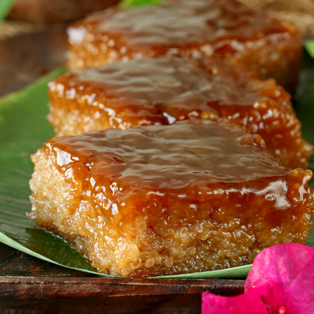
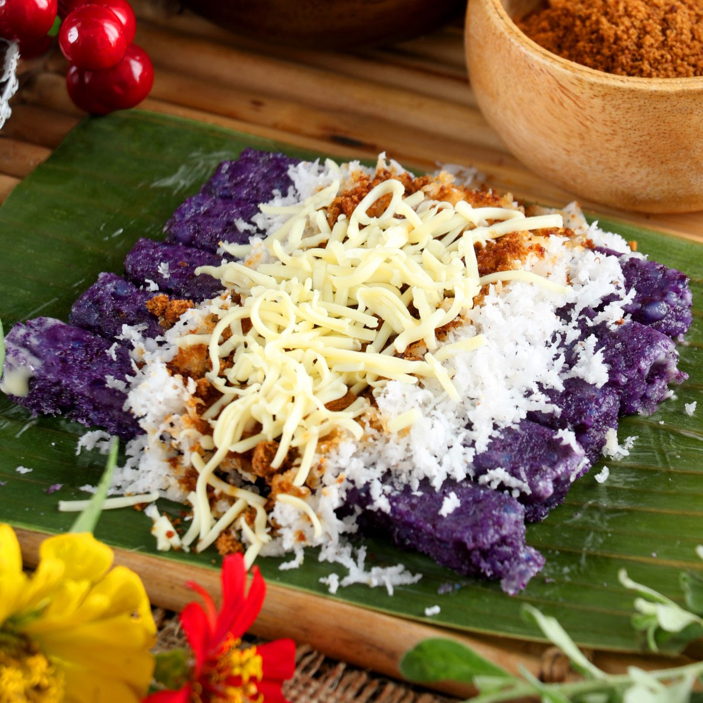

The go-to spot for Filipino dishes. Learn how to cook your favorite food with our recipes, check them out!
Filipino Desserts |
Filipino Dishes |
Streetfoods |
Beverage |
|---|---|---|---|
Leche Flan, Halo-halo, Biko, Fruit Salad, Buko Salad, Mais con Yelo, and more! |
Caldereta, Adobo, Sisig, Pancit Palabok, Arroz Caldo, Tinolang Isda, and more! |
Kwek-kwek, Cheese Sricks, Turon, Banana Cue, Fishball, Sorbetes, and more! |
Taho, Gulaman, Buko Juice, Calamnsi Juice, Tuba, Milktea, and more! |
 |
"Halo-halo is one of my favorite summertime desserts. From the Philippines—the name means “mix-mix" in Tagalog—the refreshing dish layers shaved ice and condensed milk on top of all sorts of ingredients for an end result that packs in lots of contrasting textures, from chewy to crunchy, creamy to sticky." - Tianna Gee ★★★★★ |
|  | "Biko is so yummy. Also known as malagkit, this sweet, sticky rice is a local dessert that’s very popular. There isn’t a Filipino out there who doesn’t like biko. It’s not just perfect for dessert. Biko can be eaten at any time of the day." - Mommy Snooky ★★★★★ |
|  | "The food item that I most associate with the Christmas season is the puto bumbong. Puto bumbong is a type of steamed rice cake (“puto”) made from a special local variety of rice called pirurutong which has a deep purple color. The grains are soaked in salted water overnight then drained and packed densely into bamboo tubes (the “bumbong”) and steamed until done." - Gel Jose ★★★★★ |